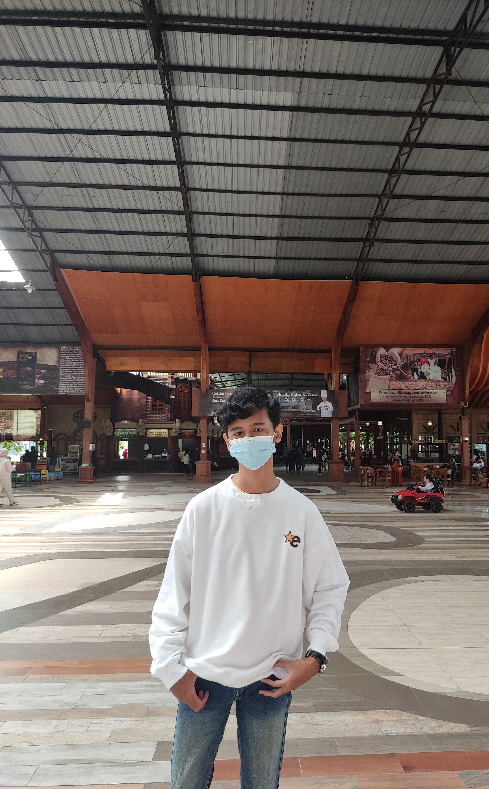

Tentang Diri

Halo, perkenalkan nama saya Brian Adriansyah Dwi Wahyudi atau biasa dipanggil Brian. Umur saya (pada saat pembuatan website) 20 tahun. Saya berasal dari Malang, Jawa Timur.
Hobi saya bermain bulu tangkis dan bermain game. motivasi saya adalah kegagalan adalah kesuksesan yang tertunda. Kelebihan saya yaitu saya orang yang sangat fokus ketika sedang mengerjakan suatu hal. Karena itu terdapat
kekurangannya juga yaitu saya jadi suka mengabaikan atau menunda hal lainnya jika terdapat suatu hal yang harus saya kerjakan.
Pendidikan

Saya memulai pendidikan saya dari TK di Malang yaitu TK Al-Kautsar selama 2 Tahun. Kemudian saya masuk SDN Blimbing 03 Malang pada saat berusia 6 Tahun.
Setelah menempuh pendidikan di SD selama 6 tahun, saya masuk ke SMP 16 Malang dan belajar disana selama 3 Tahun. Kemudian lanjut ke jenjang SMA, saya bersekolah di SMA Lab UM Malang. Setelah 3 tahun di SMA, Alhamdulillah saya
lanjut kuliah dan diterima di Universitas Brawijaya Malang Jurusan Sistem Informasi melalui Seleksi Undangan Nasional PTN. Sampai saat ini saya masih berkuliah di Universitas Brawijaya dan akan masuk di Semester 5.
Hard Skill


Pada saat masuk Jurusan Sistem Informasi, saya belajar mengenai ilmu coding dan bisnis. Pada ilmu coding, saya mempelajari Java, PHP, HTML, CSS dll. Tetapi saya saat ini tertarik pada HTML, CSS dan Javascript karena skill
tersebut adalah skill dasar yang diperlukan untuk membangun sebuah website.